Arithmetic operations
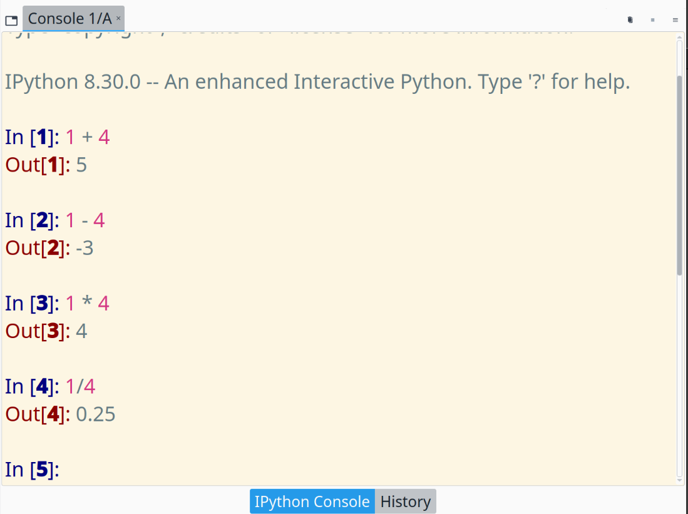
Variable definitions
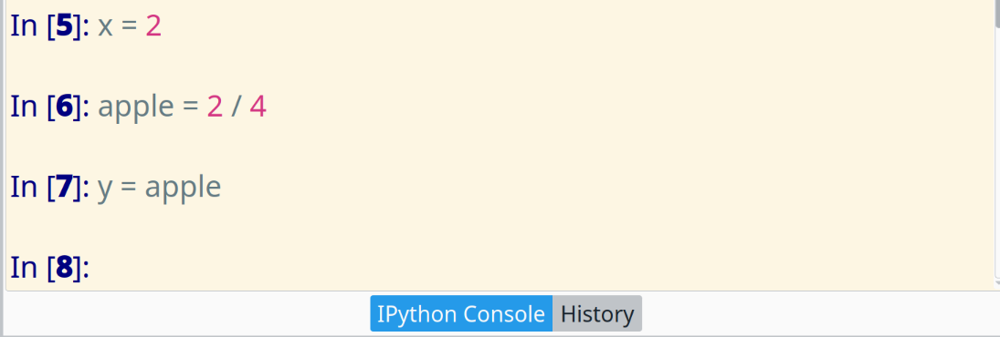
Check the variable explorer:
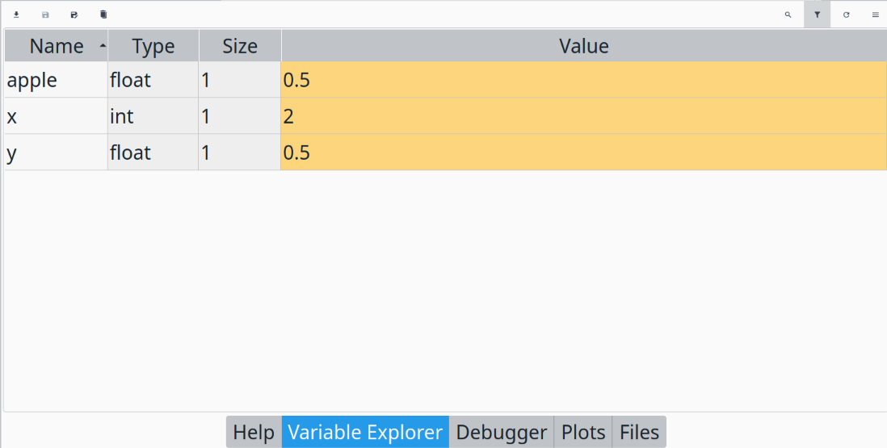
What is the value of y after execution of the prompts shown in the IPython terminal?
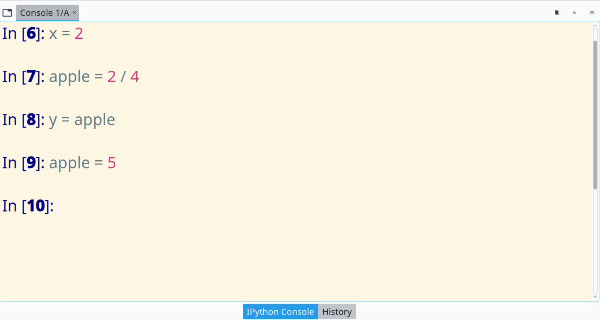
Instead of writing code in the console, let's create a script file which contains the same code in the console.
File/New file button on the top menu bar to write a new script fileuntitled0.py* will be opened. Notice that
untitled0.py is the script name.py is the file extension which represents the file type* appears when the file is not saved after any editing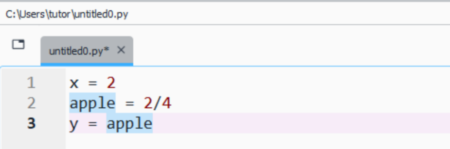
File/Save button to save it in a folder which is tracked by you
/c/Users/tutor/ is the working foldermyscript.py is the saved script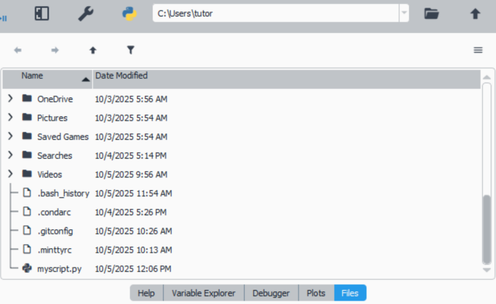
Press the play button or F5 key on the keyboard
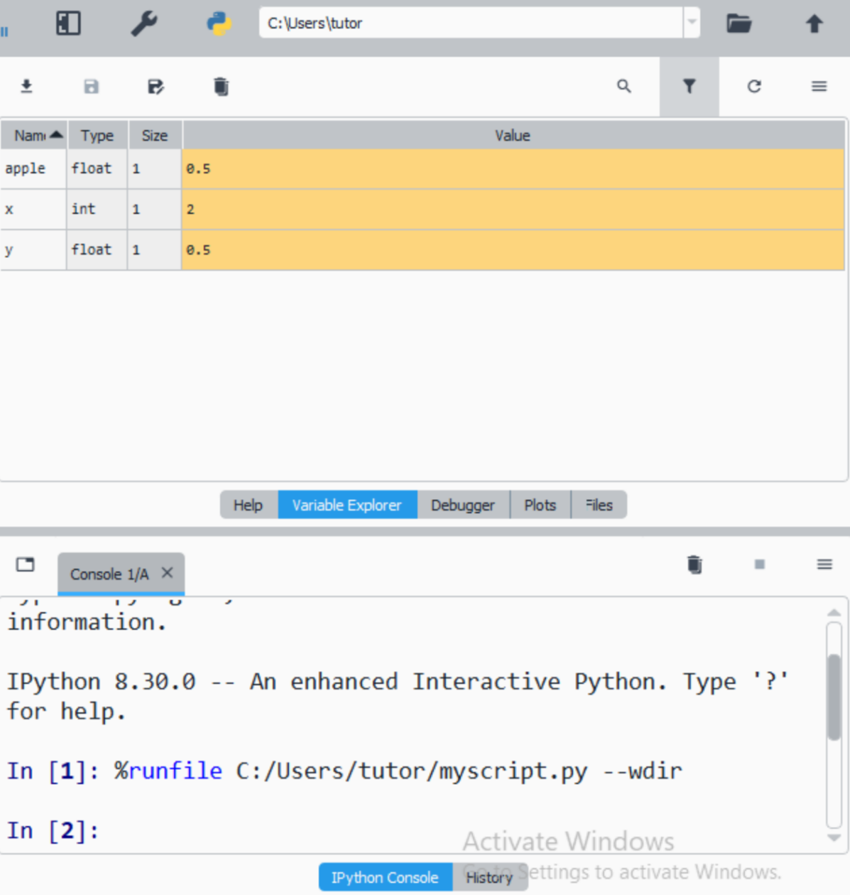
Check
The variables can be accessed through the console
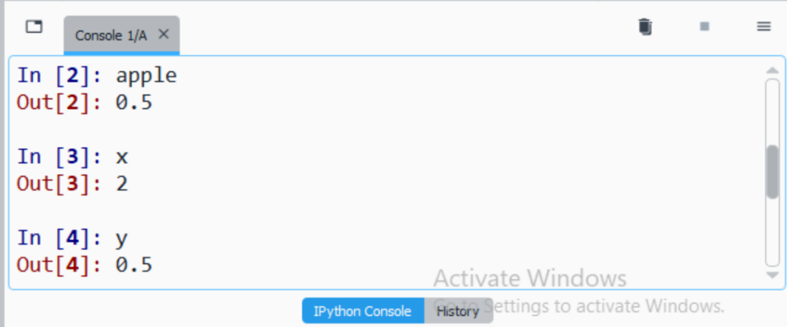
It is a terminal capable of running Bash commands, and other programs such as Git.
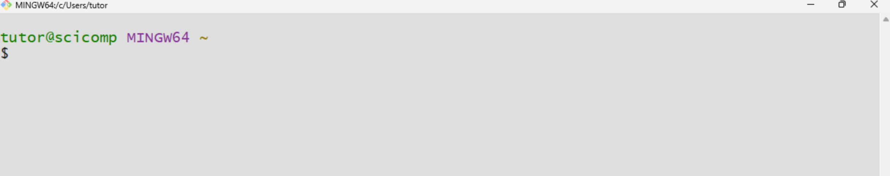
The common Bash commands used in tandem with Git program are
| ls | (l)i(s)ts the contents of the current folder |
| cd | (c)hanges (d)irectory/folder |
| pwd | (p)rints (w)orking/current (d)irectory |
| clear | (clear)s terminal window |
After the installation and signing up in Github, we have to identify ourselves in Git system.
" "" "This is done once.
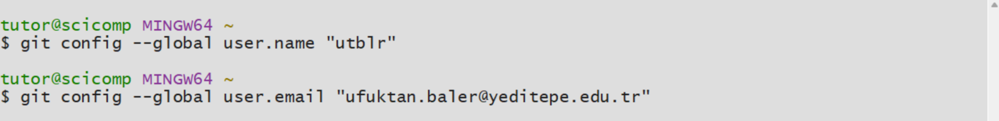
A remote repository is some kind of a folder which generally holds the folders and files of a specific project.
A sample remote repository on Github is shown,
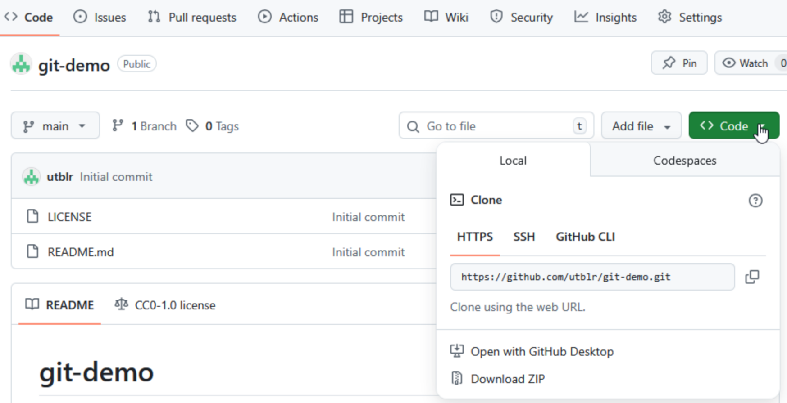
The address of the repository can be copied from the Code button.
A remote repository can be cloned/downloaded (for once) to our local computer.
First, be aware of what is your current folder by issuing pwd!!
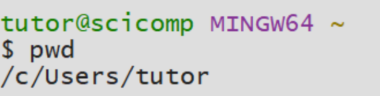
Then, git clone command is capable of clonning the repository as a folder to your current folder.
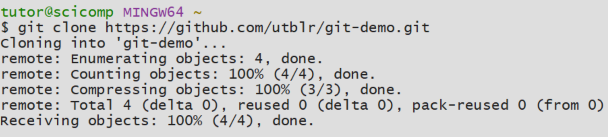
Check if the repository is downloaded by issuing ls,
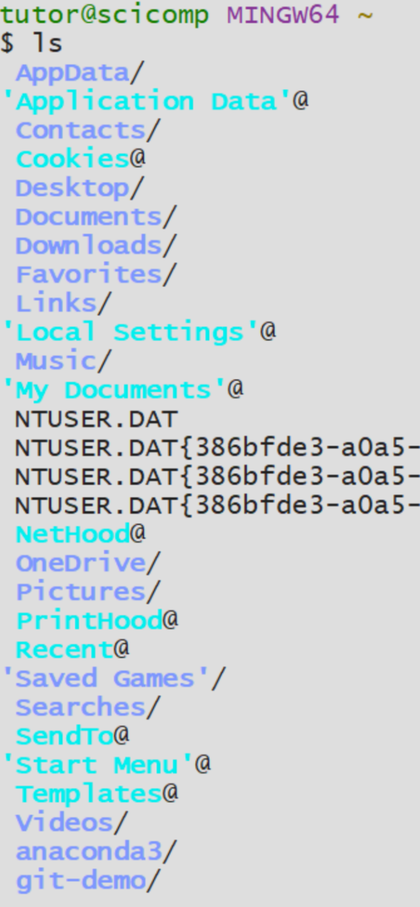
Then, go into the cloned repository by using cd command, and check the contents,
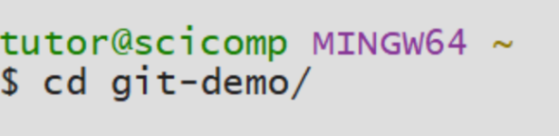
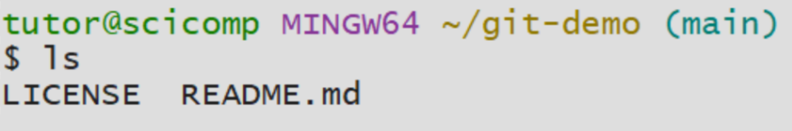
There is only two files which are as same as the ones in the remote repository!
In this section, we are going to create a new Python file and push the file to the remote repository. The algorithm would be,
Assuming Spyder is opened, navigate through the folders using the Files section in the top right window,
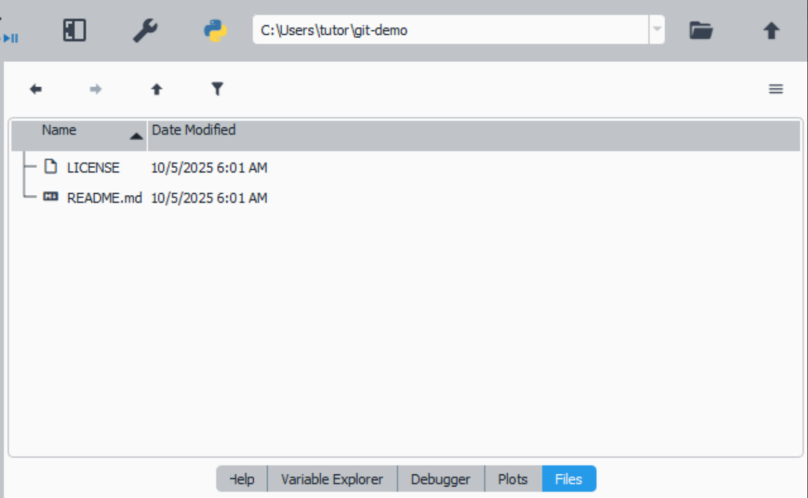
Let's create a new file,
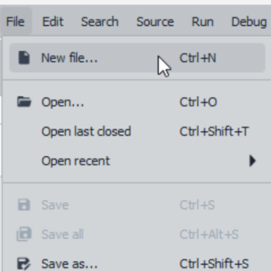
Let's write some code in the editor,
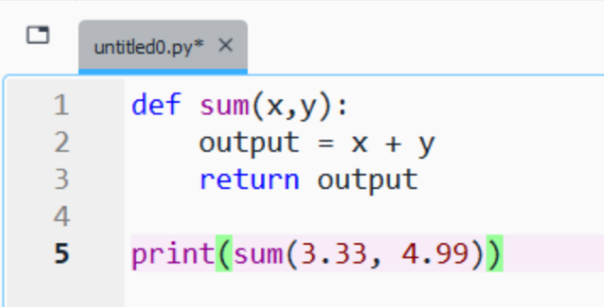
Then save it under the repository folder,
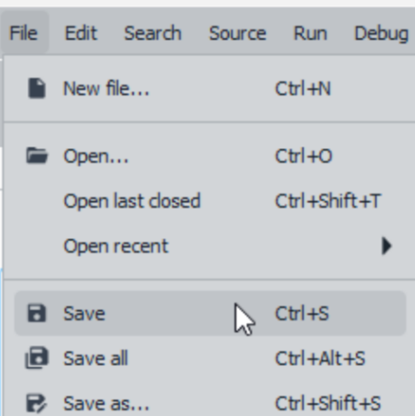
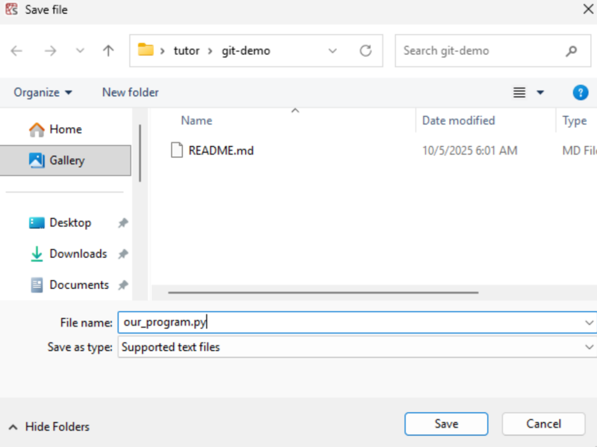
First, check the saved file in the Git-Bash terminal,
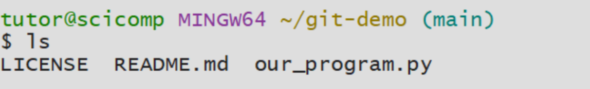
If it is there, then stage the file by issuing git add
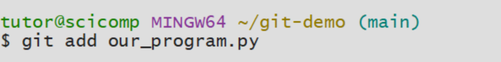
Commit the staged file by issuing git commit -m with a comment at the end,
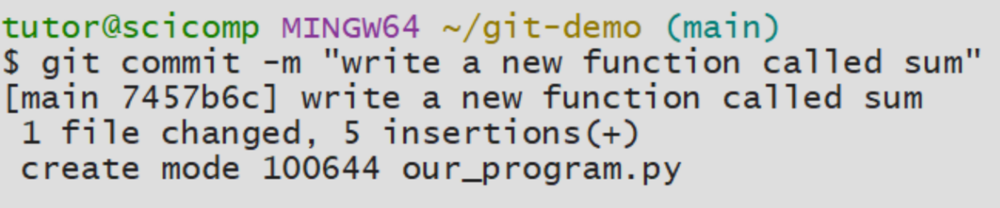
Having committed the file, now we can push the local repository to Github by issuing git push,
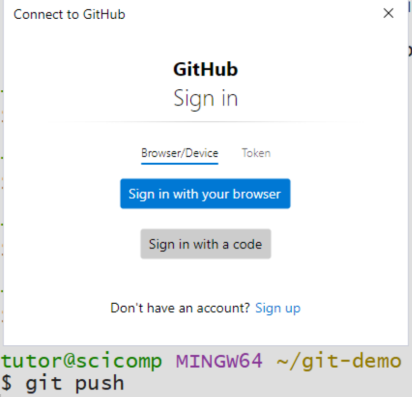
Notice that a pop-up window appeared, this is because of the first use of Git-Bash terminal. Press Sign in with your browser.
You should see something similar,
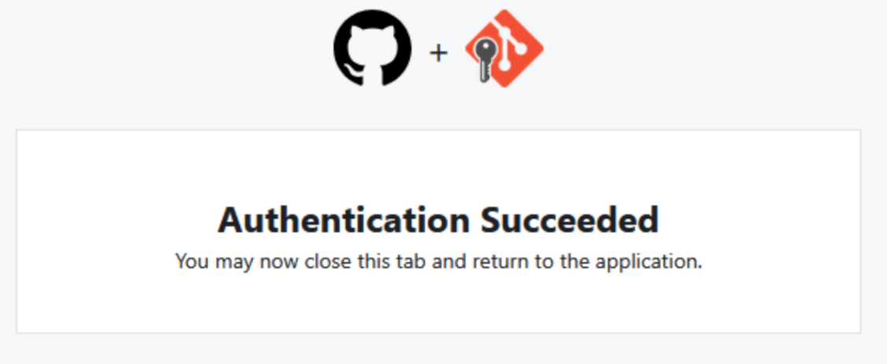
In Github we can see the recent pushed file,
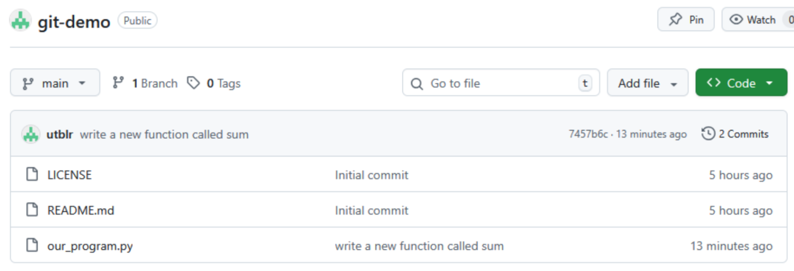